TWW dispose de différentes couches prédéfinies. Pour plus d’explications, voir le chapitre Explication des couches.
Changer les attributs des éléments de type point (chambres / structures spéciales)
Pour modifier un attribut, vous devez d’abord sélectionner la couche vw_tww_wastewater_structure.
Activez le mode édition ou lancez l’assistant TWW, puis cliquez sur Démarrer la saisie des données.
Cliquez ensuite sur le bouton Identifier les entités et cliquez sur l’élément que vous souhaitez modifier.
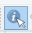
Le formulaire vw_tww_wastewater_structure s’ouvre.
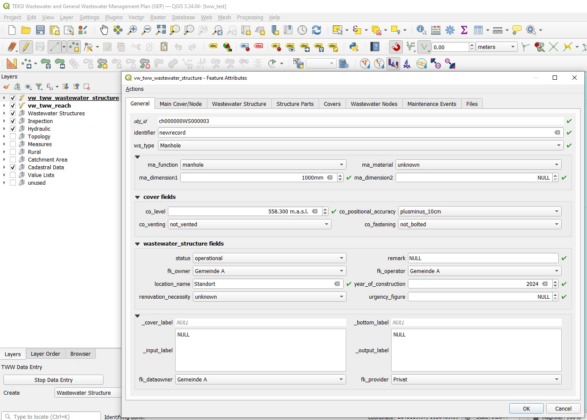
Dans le premier onglet (General), vous pouvez modifier les attributs les plus courants.
Le « Main Cover » et le « Main Node » correspondent au premier couvercle et au premier nœud définis pour le wastewater structure.
Les attributs supplémentaires de la table wastewater structure ainsi que ceux de la sous‑classe sélectionnée peuvent être modifiés dans l’onglet Wastewater structure.
Pour modifier les attributs des tables associées (par exemple couvercle), vous devez sélectionner l’onglet correspondant.
Dans l’onglet Structure Parts, il est possible d’ajouter d’autres composants, comme des des accès d’aide, des dispositifs anti‑refoulement, des canaux de temps sec, etc.
additional fields means, that some fields of the class are in the general tab, others are in separat tabs. The fields of the general tab are not repeated, because Multiedit does not work correct when using a field on more than one tab.
Modification des attributs des éléments linéaires (conduites)
Pour changer un attribut, il est nécessaire de sélectionner la couche vw_tww_reach
Basculez en mode d’édition.
Cliquez ensuite sur le bouton Identifier les entités, puis cliquez sur le tronçon que vous souhaitez modifier.
La fenêtre des attributs de l’entité vw_tww_reach s’ouvre.
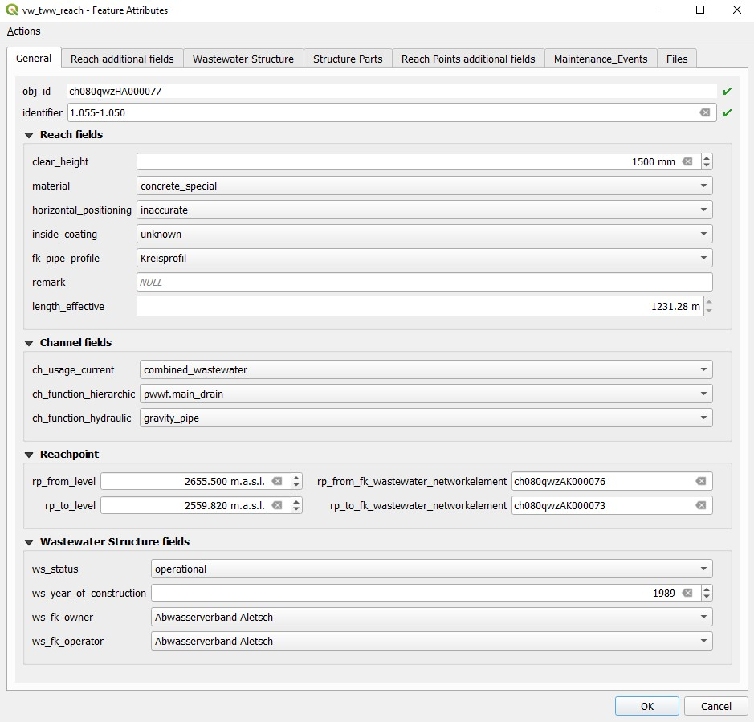
Dans le premier onglet (General), vous pouvez modifier les attributs les plus courants.
Pour modifier des attributs supplémentaires des tables liées (par exemple les reach points), sélectionnez l’onglet correspondant.
Selon la définition du VSA‑DSS, les tronçons doivent être définis dans le sens de l’écoulement (le nœud de départ correspond à l’endroit d’où provient l’eau, le nœud de fin à l’endroit où l’eau s’écoule).
TWW dispose d’un outil permettant d’inverser la direction d’un tronçon. Cet outil permet de modifier simultanément tous les tronçons sélectionnés. N’utilisez pas le bouton Inverser la ligne de QGIS, car celui‑ci ne modifie pas les points de tronçon ni leurs connexions aux éléments du réseau d’eaux usées.
Pour commencer, vous devez sélectionner tous les tronçons dont vous souhaitez modifier la direction. Il n’est pas nécessaire de sélectionner la couche vw_tww_reach ni d’activer le mode édition pour cette couche.
Open the Processing Toolbox
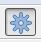
Faites un double clic sur l’outil Changer la direction du tronçon
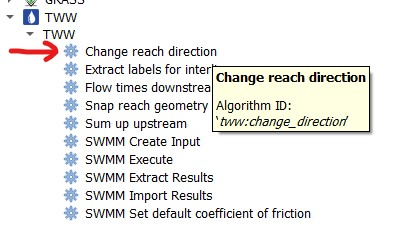
In the tool window you have to choose the vw_tww_reach - Layer and then click on Run
En zoomant ou en dézoomant, on voit que la flèche de pente ainsi que la pente ont changé, tandis que les niveaux des points de tronçon restent inchangés.
Rafraîchissez la topologie du réseau.
Vous pouvez maintenant enregistrer la modification.
Cet outil accroche graphiquement les tronçons à l’élément du réseau assainissement auquel ils sont connectés. Ils sont ainsi connectés non seulement de manière logique mais également de manière graphique.
Pour commencer, vous devez sélectionner tous les tronçons que vous souhaitez aimanter. Il n’est pas nécessaire de sélectionner la couche vw_tww_reach ni d’activer le mode édition pour cette couche.
Open the Processing Toolbox
Double‑cliquez sur l’outil Accrochage à la géométrie du tronçon
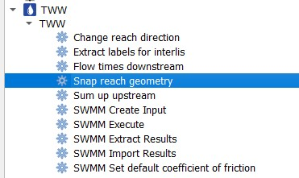
Dans la fenêtre de l’outil, vous devez sélectionner la couche vw_tww_reach ainsi que la couche vw_wastewater_node, puis cliquer sur Executer.
Si vous zoomez en avant ou en arrière, vous voyez les modifications.
If the result is not what you expect, try with a greater snapping distance
S’il existe des connexions d’un tronçon à un autre, le point de tronçon se déplace perpendiculairement à l’autre tronçon. S’il n’est pas possible d’obtenir un angle droit, il se déplace vers l’extrémité la plus proche du tronçon.
Attention
S’il existe une aimantation d’un tronçon à un autre, le résultat peut ne pas correspondre aux attentes si un premier tronçon s’aimante à un deuxième, puis que ce deuxième tronçon s’aimante ensuite à un nœud ou à un troisième tronçon. Dans ce cas, il n’y aura plus de connexion graphique entre le tronçon 1 et le tronçon 2. Il est alors nécessaire de relancer la commande.
Les valeurs des champs associés à des listes de valeurs sont enregistrées dans la base de données sous forme de codes.
Note
Les codes sont uniques, même lorsque le même libellé apparaît dans différentes listes de valeurs. Par exemple, le code pour » surface_wastewater « dans vl_channel_usage_current est différent de celui utilisé dans vl_channel_usage_planned.
Dans un projet TWW correctement configuré, les valeurs affichées dans la vue table ou dans la vue formulaire apparaissent dans la langue du projet, et non sous forme de codes.
Mais si vous voulez définir une sélection avec une expression ou si vous vous voulez définir une symbologie basée sur des règles pour votre couche, vous devez connaître les codes ou utiliser l’expression suivante: represent_value(« field »)
Examples for using represent_value
Rechercher tous les tronçons des installations principales d’eaux usées dont (function_hierarchic commence par pwwf)
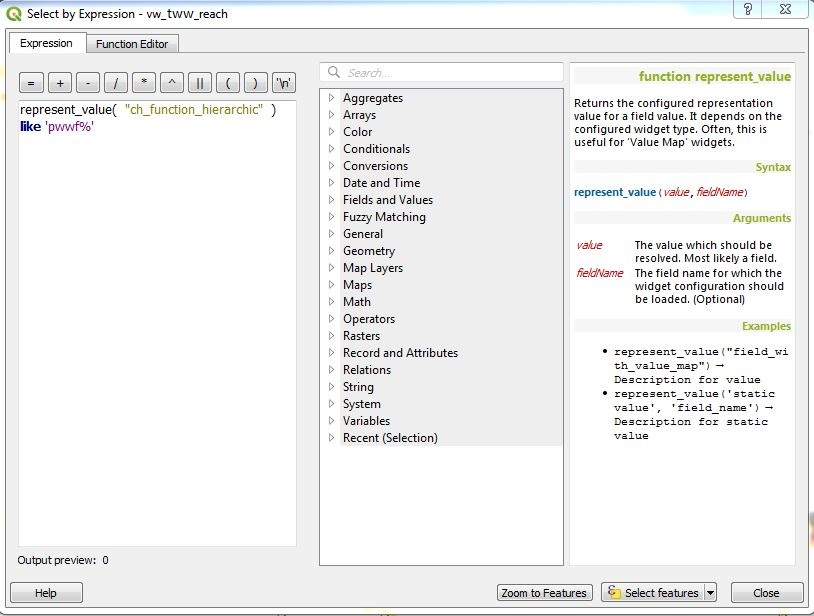
Sélectionner tous les tronçons n’ayant pas la même valeur pour usage_planifié et usage_courant
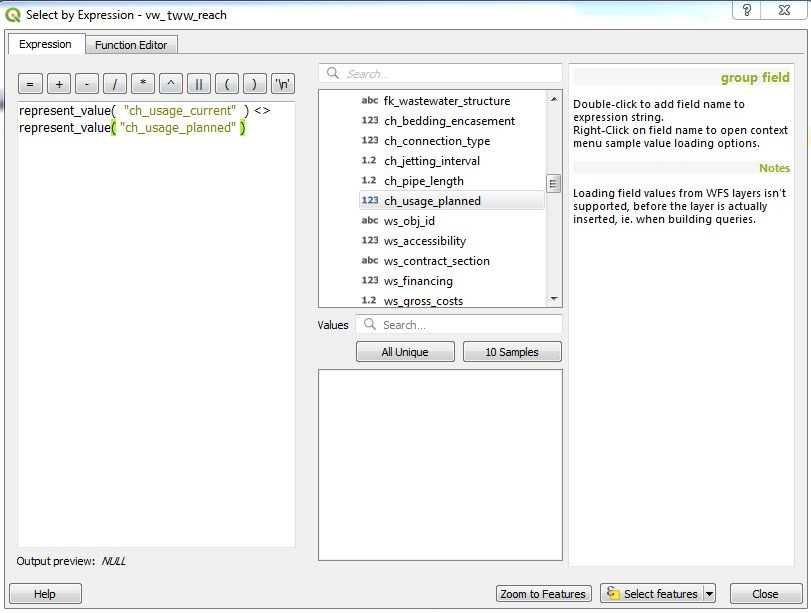
Note
L’expression « co_usage_courant » <> « co_usage planifie » ne fonctionne pas à cause des codes uniques!
Note
Dans le projet démo il n’y a pas d’utilisation de valeur_representation pour les symboles basés sur des règles, sinon les règles ne vont fonctionner que pour un seul langage.
Avec l’outil Identifier une entité activé, un clic droit sur un élément affichera une sélection de tous les objets existants.
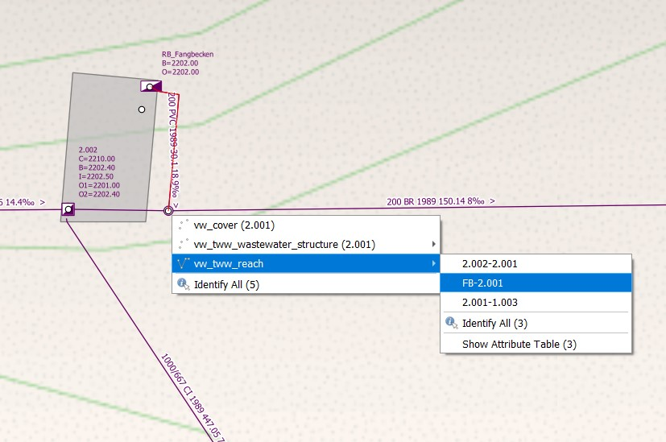
Vous pouvez alors sélectionner l’objet désiré. Ceci ouvrira le formulaire correspondant contenant les informations détaillées.
Ajouter des couvercles et noeuds additionnels à une structure assainissement existante
Si un wastewater structure ne possède pas encore de couvercle, il est possible d’en ajouter un en renseignant un attribut co_ dans vw_tww_wastewater_structure. Le couvercle est alors créé à l’emplacement du vw_tww_wastewater_structure.
Note
La description suivante concerne l’ajout d’un couvercle supplémentaire. Elle s’applique de manière analogue à l’ajout de nœuds d’eaux usées supplémentaires.
Le projet TWW est configuré de manière à permettre l’ajout d’un couvercle supplémentaire à l’aide du bouton Add Point Child Feature.
Sélectionnez la couche vw_tww_wastewater_structure.
Basculez en mode d’édition.
Cliquez sur le regard auquel vous souhaitez ajouter un couvercle à l’aide de l’outil Identifier les entités.
Allez dans l’onglet Covers et cliquez sur le bouton Add Point Child Feature. Vous pouvez alors numériser un nouveau couvercle pour le wastewater structure.
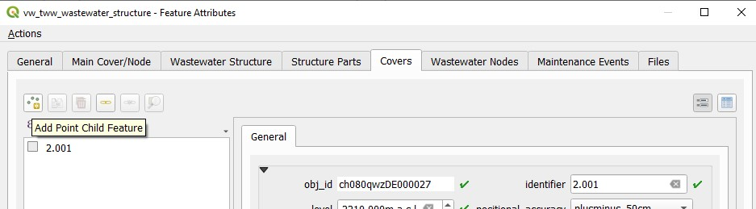
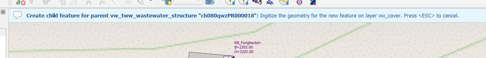
Ajouter un noeud assainissement à un tronçon existant
Dans certains cas, il est nécessaire d’ajouter un nœud d’eaux usées entre deux ou plusieurs tronçons, même s’il n’y a pas de regard à cet endroit.
Note
Ces cas se rencontrent principalement dans les canaux du réseau pwwf (installations principales d’eaux usées), par exemple en cas de changement de pente, de changement de matériau, ou lorsqu’il existe un raccordement entre deux canaux sans regard (en allemand : Blindanschluss).
Dans le modèle de données, il est possible de connecter un nœud situé entre des tronçons directement à un canal (car un canal est lui aussi un wastewater structure). Il existe actuellement une discussion pour déterminer s’il est nécessaire, optionnel, ou même interdit de définir une connexion à un wastewater structure.
Dans TWW, il n’existe actuellement aucun outil permettant de connecter directement un nœud d’eaux usées à un canal. Il faut donc simplement connecter les tronçons (points de tronçon) au nœud.
Note
Si vous souhaitez réellement connecter le nœud à un canal, saisissez manuellement l’obj_id du canal dans le champ fk_wastewater_structure du nœud.
Il existe plusieurs possibilités dans QGIS pour modifier plusieurs enregistrements en même temps. La fonction QGIS Edition multiple permet de modifier simultanément plusieurs champs de plusieurs enregistrements, mais sans indicateur de progression. Avec la calculatrice de champs de QGIS, un seul champ peut être modifié à la fois, mais un indicateur de progression est affiché.
Lorsqu’il y a beaucoup d’enregistrements (plusieurs centaines à plusieurs milliers), une modification multiple peut prendre beaucoup de temps (plusieurs minutes), en particulier si de nombreuses vues sont modifiées et que celles‑ci contiennent de nombreux champs provenant de différentes tables. Les vues principales de TWW (vw_tww_wastewater_structure et vw_tww_reach) sont particulièrement concernées par ce problème. Il est donc toujours préférable d’éviter la modification multiple sur ces grandes vues et de modifier directement la table concernée lorsqu’un grand nombre d’enregistrements doit être mis à jour simultanément. C’est pourquoi il est important de savoir dans quelle table se trouve le champ à modifier (le préfixe du nom du champ peut être utile) et, le cas échéant, d’ajouter cette table au projet TWW. Pour illustrer l’importance de cet aspect, le test suivant a été réalisé :
Modification du champ rv_construction_type pour 500 tronçons sur un total de 1 653. Il s’agit d’un champ associé à une liste de valeurs. Dans vw_tww_reach, le nom du champ est ws_rv_construction_type, ce qui indique que ce champ provient de la table wastewater structure (ws).
How long did we wait:
Utilisation de la calculatrice de champs avec vw_tww_reach : plus de 2 min 24 s !
Utilisation de la calculatrice de champs avec vw_channel : 33 secondes.
Pourquoi vw_tww_reach est‑elle si lente ? Parce qu’il existe des déclencheurs « triggers » dans la base de données qui, pour chaque enregistrement, mettent à jour les champs calculés des regards et des nœuds connectés, afin que la symbologie de ces éléments soit en permanence à jour.
TWW dispose d’une fonction permettant d’activer ou de désactiver les déclencheurs de symbologie (voir le chapitre « how to »).
Utilisation de la calculatrice de champs avec vw_tww_reach, déclencheurs « trigger » de symbologie désactivés : environ 15 secondes.
Click Save and then deactivate the edit mode or click on Stop data entry if you have worked with the TWW Wizard.
Modification du type de wastewater structure (ws_type).
Dans le formulaire vw_tww_wastewater_structure, vous pouvez modifier la sous‑classe du wastewater structure (par exemple passer de manhole à special structure ou à infiltration installation) à l’aide du champ ws_type. L’enregistrement de l’ancienne sous‑classe est supprimé et vous devez renseigner à nouveau les attributs spécifiques à la nouvelle sous‑classe. En revanche, toutes les connexions (qui sont définies au niveau de la classe wastewater structure et non de la sous‑classe), ainsi que l’obj_id et l’identifier, restent inchangés.
Note
Vous ne pouvez pas changer un élément ponctuel assainissement (p.ex. regard) en élément linéaire assainissement (p.ex. conduite) ou vice versa.
Séparer un tronçon (conduite) en différents tronçons
Il s’agit d’une fonction relativement complexe. Dans la version actuelle de TWW, seule une solution simple basée sur l’outil standard QGIS Scinder les entités est implémentée. L’utilisation de cet outil constitue actuellement la meilleure solution, mais des compléments manuels sont nécessaires.
Le résultat du découpage d’un tronçon est la création de deux tronçons et de deux canaux, avec duplication de tous les champs, à l’exception des niveaux des points de tronçon « reach_point.level », des références reach_point.fk_wastewater_networkelement, ainsi que, bien entendu, de l’identifier et de l’obj_id, (qui doivent être uniques). Après avoir scindé un tronçon, il est nécessaire de contrôler les deux parties issues de l’ »ancien » tronçon.
La partie amont du tronçon conserve toutes les anciennes valeurs ; il est donc nécessaire d’ajuster le niveau du point de tronçon aval « to_reach_point.level » ainsi que sa connexion (to_reach_point.fk_wastewater_networkelement). La partie amont conserve également tous les événements de maintenance ainsi que toutes les connexions des autres tronçons vers le tronçon scindé.
Dans la partie inférieure (nouvelle) du tronçon, vous devrez ajuster les deux niveaux des points de tronçon ainsi que les deux connexions des points de tronçon. Vérifiez (et ajoutez si nécessaire) les événements de maintenance ainsi que les connexions des autres tronçons. Modifiez les identifiants (tronçon, canal) si nécessaire. Enfin, ajoutez et connectez un nouveau wastewater node entre les deux tronçons s’il s’agit d’un canal primaire.
Deuxième solution : modifier le tronçon existant et dessiner manuellement le second tronçon. Vérifier ensuite les connexions.
Un outil permettant de scinder des tronçons sera disponible ultérieurement dans TWW. L’utilisateur devra décider si la scission concerne uniquement la classe reach ou également la classe channel, et si un nouveau wastewater node doit être ajouté et connecté. L’outil devra être capable de calculer les nouveaux niveaux des points de tronçon et d’adapter, si nécessaire, les connexions existantes aux éléments du réseau.
{kind=link}